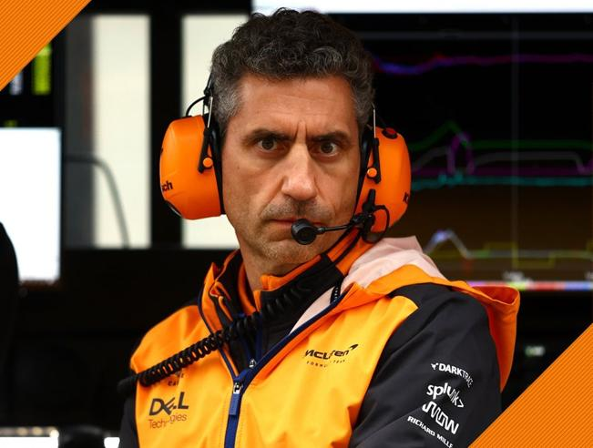
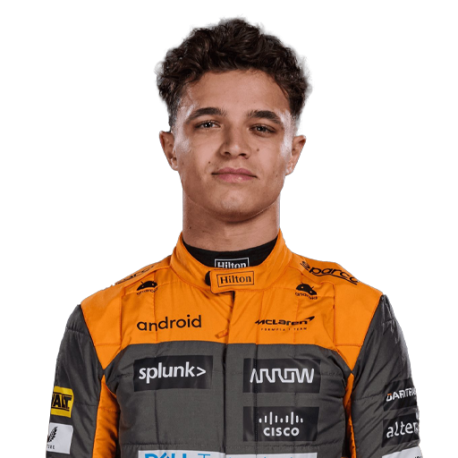
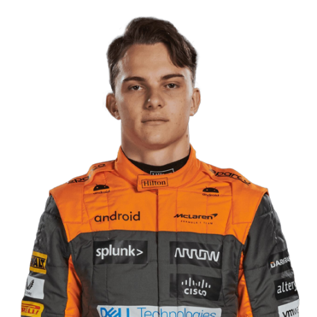

Team
Meet the team.
Team Principal

Andrea Stella
Drivers

Lando Norris

Oscar Piastri
Meet the team.
Andrea Stella
Lando Norris
Oscar Piastri
Bruce McLaren Motor Racing was founded in 1963 by New Zealander Bruce McLaren. Having raced for Cooper in Formula 1, winning three races and finishing second in the 1960 championship, Bruce wanted to compete in the Tasman Series and approached his employers. However, following a disagreement over the type of engine to use, he decided to set up his own squad for himself and teammate Timmy Mayer to run in.
The team made their Grand Prix debut at the 1966 race in Monaco, making them the second oldest current Formula 1 team after Ferrari. Unfortunately, the debut lasted just nine laps, as McLaren retired with an oil leak. The outfit scored their first points at the British Grand Prix, but the team struggled due to unreliable and underpowered engines.
Emerson Fittipaldi joined the team in 1974, two years after winning the title with Lotus. Hulme, in what was his final F1 season, won the season-opener in Argentina. However, it was the Brazilian who took the title, beating Ferrari's Clay Regazzoni by four points after finishing fourth at the season-ending United States Grand Prix. Fittipaldi, Hulme and multiple motorcycle World Champion Mike Hailwood helped McLaren to win their first Constructors' Championship.
The British driver trailed Lauda by 30 points midway through the 1976 season, despite wins in Spain and France. However, Lauda crashed and was nearly killed at the German Grand Prix. Whilst he only missed two races, Hunt quickly caught him in the standings. Hunt won four more races and trailed by three points heading into the season finale in Japan. Heavy rain pushed Lauda to retire due to safety concerns, allowing the Briton to take the championship following a third-place finish, though Ferrari beat McLaren to the Constructors' title.
While the 1987 season saw McLaren unable to challenge Williams-Honda, things changed in 1988. McLaren teamed up with the Japanese engine supplier and, encouraged by Prost, Dennis signed Ayrton Senna to partner the Frenchman.
The campaign was dominated by the Woking outfit, with McLaren winning 15 of the 16 races. The lone failure came at Monza, when Senna had been leading comfortably only to collide with back marker Jean-Louis Schlesser, handing the win to Ferrari's Gerhard Berger.The success continued in 1989 as McLaren took both titles thanks to the MP4/5.
The addition of Newey, as well as Williams losing their Renault engines, saw a shift at the front in 1998, as McLaren battled it out with Michael Schumacher and Ferrari for the title. McLaren won five of the opening six races, but Hakkinen found himself level on points with the German with two races to go. In the end, the Finn won the Luxembourg and Japanese Grands Prix to take the Drivers' Championship, while McLaren clinched the Constructors' Championship.
Hakkinen added a second title the following year, beating the other Ferrari driver Eddie Irvine after Schumacher's title bid ended following an accident in which he broke his leg at the British Grand Prix. McLaren were unable to retain the Constructors' crown, though, due to a series of driver errors and mechanical failures.
McLaren won seven races in 2000, but in the end it wasn't enough to prevent Ferrari and Schumacher from taking both titles.McLaren brought in two-time F1 champion Alonso alongside rookie Lewis Hamilton in 2007, with both drivers quickly experiencing success on track. Each won four races and led the Drivers' Championship for most of the year. The 2008 season saw Hamilton battle it out with the Ferrari duo of Raikkonen and Felipe Massa. Just like in the previous campaign, the Briton headed into the final race of the season in Brazil at the top of the standings. Massa took the win, and initially it looked like it would be enough to claim the title as well. However, Hamilton clinched the championship by passing Timo Glock on the final corner of the final lap, finishing the race in fifth. With Kovalainen only able to finish seventh in the overall standings, though, the Constructors' Championship went to Ferrari.
1961, 1964, 1975, 1976, 1977, 1979, 1982, 1983, 1999, 2000, 2001, 2002, 2003, 2004, 2007, 2008
Emerson Fittipaldi X1(1974), James Hunt X1(1976), Nikki Lauda X1(1984), Alain Prost X3(1985, 1986, 1989), Ayrton Senna X3 (1988, 1990, 1991), Mika Hakkinen X2 (1998, 1999), Lewis Hamilton X1 (2008)